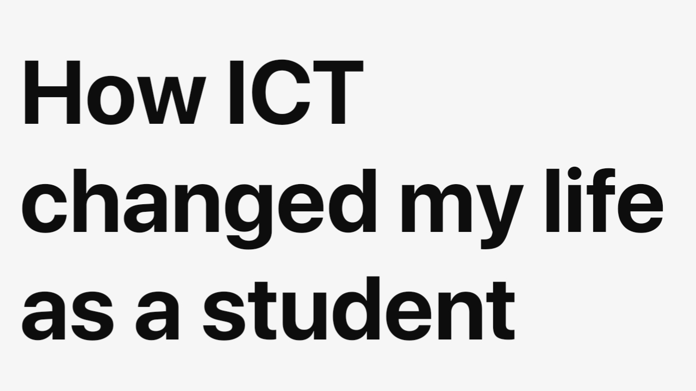

Daryll Jake Vallejo
August 13, 2024 | 02:06 AM
Without ICT, my life would be very hard or difficult, but when ICT came into my life, everything changed. ICT has reduced my academic work hours, helped me in my daily routine, and more. Based on my experiences, it really shows that ICT has a significant impact on a student's life like mine.
